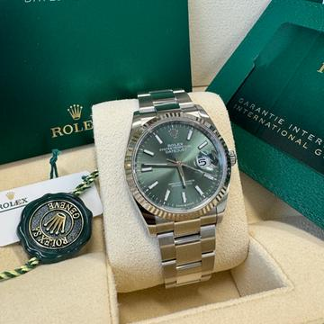

Rolex Datejust 36 — это классические часы, которые идеально сочетают элегантность и функциональность. Выпущенные в 1945 году, они стали символом стиля и престижа. Модель Datejust 36 отличается диаметром корпуса 36 мм, что делает ее универсальной для большинства запястий.
Rolex Datejust 36 — это классические часы, которые идеально сочетают элегантность и функциональность. Выпущенные в 1945 году, они стали символом стиля и престижа. Модель Datejust 36 отличается диаметром корпуса 36 мм, что делает ее универсальной для большинства запястий.
Корпус часов выполнен из различных материалов, включая нержавеющую сталь, золото и Rolesor (комбинация золота и стали).
Циферблат доступен в различных вариантах, включая классические оттенки, такие как черный, серебристый и белый, а также более смелые цвета. Каждая модель может быть дополнена алмазной или меточной индикацией.
Одной из ключевых особенностей Datejust является функция даты, которая отображается в окне на 3 часа с увеличением благодаря увеличительному стеклу Cyclops. Это удобно и практично для повседневного использования.
Часы также оснащены автоматическим механизмом, который гарантирует надежность и точность хода.
Они водонепроницаемы на глубину до 100 метров и оснащены гладкой или текстурированной безелем, в зависимости от выбранной конфигурации.
Rolex Datejust 36 — это не просто часы, а инвестиция в стиль и качество, которые останутся актуальными на протяжении многих лет.
Эти часы подойдут как для деловых встреч, так и для повседневного ношения, подчеркивая индивидуальность и утонченность их владельца.
Цена:2.450.000руб.

Добавить в корзину